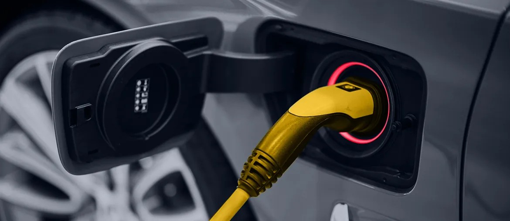

1
Map the current service path
Review Germany and EU-Africa handoffs across sales, quality, field support, and R&D. Turn that into one service flow with clear owners.
Your Germany team is moving from product launch to long-term field support. That shift needs faster issue intake and cleaner service data. It also needs one process for sales, quality, and engineering.
We saw Gotion hiring an after sales engineer in Göttingen to build the EU-Africa service system. That usually means demand is growing faster than the current tools and workflows.
That hiring signal says Gotion is moving from local delivery to regional support. The hard part is not one engineer. It is the service backbone behind that engineer. Your teams need one place for warranty intake, field issues, and spare-part status. They also need training records and clear feedback to quality and R&D. If that loop stays split, response time slows and product learning arrives late.
Engagement model: a dedicated squad under your PO or PM for a 10-week pilot, with weekly demos and a clear handoff into your long-term service team.
Built for service flows, product feedback, and stable rollout.
Review Germany and EU-Africa handoffs across sales, quality, field support, and R&D. Turn that into one service flow with clear owners.
Create a web layer for case intake, warranty checks, spare-part requests, and escalation status across BESS, battery pack, and charger programs.
Route repeat faults, training gaps, and field notes back to quality and engineering, so recurring issues do not stay trapped in email threads.
Start from Germany, measure response time and case quality, then roll the same model to partner teams across Europe and Africa.
Elinext is a full-cycle software development company with about 700 in-house specialists. We have worked this way since 1997. For industrial programs, that matters because service systems need web, integrations, QA, and steady delivery in one team. We already deliver for Siemens, Volkswagen, and TRUMPF. We also work under ISO 9001 and ISO 27001 rules. We can supply React, .NET, Node.js, QA, and BA roles without subcontractors. That setup fits the service hub and field workflow proposed above.

Elinext built mobile software for a Swiss EV-charging company and shipped full functionality, then supported later feature growth.
View case study
Elinext helped modernize and support a complex MES product, with round-the-clock support and deep end-client integration work.
View case studyWe can map the pilot and the first rollout path.
Start the conversation